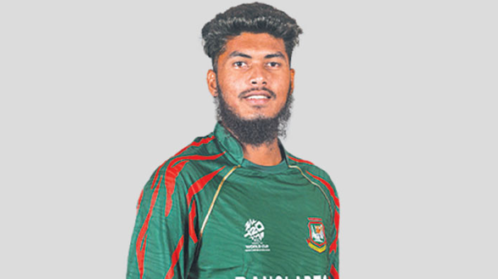

তারিখ: ১৯ জুন ২০২৫
অবশেষে অস্ট্রেলিয়ার জনপ্রিয় টি-টোয়েন্টি লিগ বিগ ব্যাশে খেলার স্বপ্ন আরও এক ধাপ এগোল বাংলাদেশের তরুণ লেগ স্পিনার রিশাদ হোসেনের। বৃহস্পতিবার মেলবোর্নে অনুষ্ঠিত ড্রাফটের দ্বিতীয় রাউন্ডে বর্তমান চ্যাম্পিয়ন হোবার্ট হ্যারিকেন্স তাকে দলে ভেড়ায়। রিশাদের পাশাপাশি ইংল্যান্ডের পেসার ক্রিস জর্ডান ও লেগ স্পিনিং অলরাউন্ডার রেহান আহমেদও হোবার্টে ঠিকানা খুঁজে পান।
গত আসরেও হোবার্ট হ্যারিকেন্সের ড্রাফটে জায়গা হয়েছিল রিশাদের। তবে জাতীয় দলের ওয়েস্ট ইন্ডিজ সফর ও পরে বিপিএলের ব্যস্ত সূচির কারণে তখন মাঠে নামা হয়নি তার। বিসিবি থেকে অনাপত্তিপত্র পেলেও জটিলতা বাড়ায় শেষ পর্যন্ত খেলা হয়নি। এবারে সেই গল্প যেন পাল্টাতে যাচ্ছে।
বিগ ব্যাশের অফিসিয়াল ওয়েবসাইট অনুযায়ী, এবার পুরো আসরের জন্যই নাম নিবন্ধন করেছেন ২৩ বছর বয়সী এই লেগ স্পিনার।
গত বছর সাকিব আল হাসানের পর দ্বিতীয় বাংলাদেশি হিসেবে বিগ ব্যাশে দল পেলেন রিশাদ। তবে ড্রাফট থেকে সরাসরি সুযোগ পাওয়া তিনিই প্রথম বাংলাদেশি।
২০২4 সালের টি-টোয়েন্টি বিশ্বকাপে আলো ছড়িয়ে আন্তর্জাতিক অঙ্গনে নিজেকে নতুন উচ্চতায় নিয়ে যান রিশাদ। ওয়েস্ট ইন্ডিজ ও যুক্তরাষ্ট্রে অনুষ্ঠিত আসরে ১৪ উইকেট নিয়ে এক আসরে বাংলাদেশের হয়ে সর্বোচ্চ উইকেট শিকারের রেকর্ড গড়েন তিনি।
বিগ ব্যাশের ১৫তম আসর শুরু হবে ডিসেম্বরের শেষ দিকে এবং চলবে জানুয়ারির শেষ পর্যন্ত। আইসিসির এফটিপি অনুযায়ী, ওই সময়ে জাতীয় দলের কোনো সিরিজ না থাকায় রিশাদের জন্য এবার লিগে অংশ নেওয়ার রাস্তা একদম পরিষ্কার।
দেশের অস্থির রাজনৈতিক পরিস্থিতির কারণে এর আগে কানাডার গ্লোবাল টি-টোয়েন্টি লিগে যেতে না পারা রিশাদের বিদেশি লিগের স্বপ্ন বাস্তবায়িত হয় চলতি বছর পাকিস্তান সুপার লিগ (পিএসএল) দিয়ে।